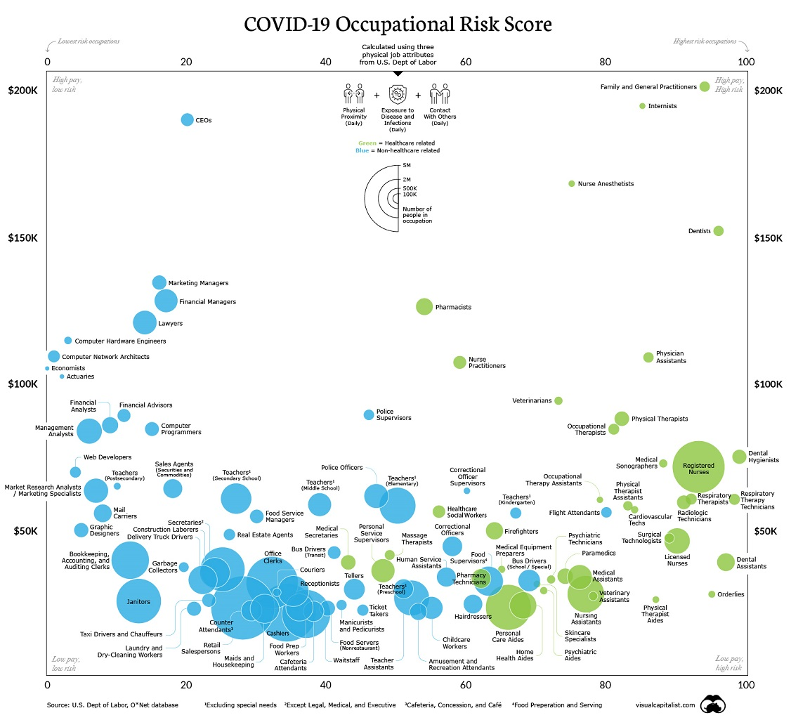

Results:
Here is a detailed breakdown of how each of your choices affects your risk level.
Risk level is scored from a level of 1-100, with 1 being least risky and 100 being most risky. If a score reads 0, that factor was not taken into consideration when calculating.
PLEASE NOTE: These results are not a diagnosis of, or a test for, COVID19. This data could be innacurate and is simply used as a suggestion.
Age:
Your age is
, which has a risk level of
1 (Low Risk) 100 (High Risk)
The age risk level data shows that 18-29 year olds are at most risk for contracting COVID-19 in the US, and the age group least at risk are 0-4 year olds.
The age risk level data shows that 35-39 year olds are at most risk for contracting COVID-19 in Mexico, and the age group least at risk are 95-99 year olds.
Sex:
Your sex is
, which has a risk level of
1 (Low Risk) 100 (High Risk)
Race: (US Residents Only)
Your race is
, which has a risk level of
1 (Low Risk) 100 (High Risk)
The data shows the distribution of COVID-19 risk levels across different race/ethnicities in the US.
The Native Hawaiian/ Pacific Islanders as well as the American Indians/ Alaskan Natives are the groups at most risk for contracting COVID-19.
Income: (US Residents Only)
Your income is
, which has a risk level of
1 (Low Risk) 100 (High Risk)
The risk level based on income shows that statistically, people at a lower income bracket are at more risk for contracting COVID-19.
This could be due to several reasons, including lack of resources to protect oneself from COVID-19
Location:
You live in
, which has a risk level of
1 (Low Risk) 100 (High Risk)
The location data shows the risk level across states for their respective regions. The dashed line represents the national median risk level (which accounts for all states in the country)
Job:
You said your job is
, which has a risk level of
1 (Low Risk) 100 (High Risk)

The most dangerous careers are ones involving contact with potentially COVID-19 positive patients in the medical field.
However, most careers not in the medical field are at a risk below 50, with careers involving more human interaction being more dangerous.
Visit
Methods to see a higher quality picture.
Activity Risk:
Your average risk level from activities is
1 (Low Risk) 100 (High Risk)
Activities that involve more human interaction generally involve more risk. For example, getting restaurant takeout involves limited contact with one person at the most,
while eating at a buffet involves many people sharing food, touching the same serving utensils, and breathing the same air.
Mask habit:
You said your mask habit is
, which has a risk level of
1 (Low Risk) 20 (High Risk)
Masks significantly reduce the risk of contracting COVID-19 by more than 80%. To reduce the risk of contracting COVID-19, we encourage mask wearing and face coverings.
Based on the data on COVID-19, it is shown mask wearing decreases rates of infection drastically.
Social Distancing:
You said you maintain an average distance of
from others, which has a risk level in the range of
Social Distancing significantly reduces the risk of contracting COVID-19. The graph above shows the risk percentage as well as the range of risk a person could have to contract COVID-19 based on distance.
The closer an individual is on average to another person, the more likely they are to contract COVID-19.
Tips:
Here are some personalized tips and suggestions to help reduce your likelihood to contract COVID-19
No mask: Your results indicate that you do not wear a mask when going out of the house.
We would highly encourage you to wear a mask as the data indicates that wearing a mask decreases transmission rates by more than 80%.
For more information, see the
CDC guidelines on masks.
Mask: Your results indicate that you do wear a mask when going out of the house.
We appreciate this behavior and would highly encourage you to continue to wear a mask as
the data indicates that wearing a mask decreases transmission rates by more than 80%.
For more information, see the
CDC guidelines on masks.
No Social Distancing: Your results indicate that on average, you stay away from others by less than 6 feet.
The data indicates a significant drop in COVID-19 transmission rates when social distancing by at least 6 feet away from others.
For more information, see the
CDC guidelines on social distancing.
Social Distancing: Your results indicate that on average, you stay away from others by more than or equal to 6 feet.
We appreciate this behavior and would encourage you to continue to social distance.
The data indicates a significant drop in COVID-19 transmission rates when social distancing by at least 6 feet away from others.
For more information, see the
CDC guidelines on social distancing.
High Risk Activities: Your results indicate that you participate in high risk level activities.
These activities are high risk because they involve close contact with many other people, which is statistically shown to drastically
increase transmission rates. Please refrain from participating in these high risk activities if at all possible.
Low Risk Activities: Your results indicate that you participate in low risk level activities.
We encourage this behavior as it is conducive to the least amount of risk for contracting COVID-19.
These activities are low risk because they don't involve close contact with many other people.
We encourage you to continue to refrain from participating in any high risk activities if at all possible.
Want to see how we calculated your risk scores? Check the Methods tab for more info!